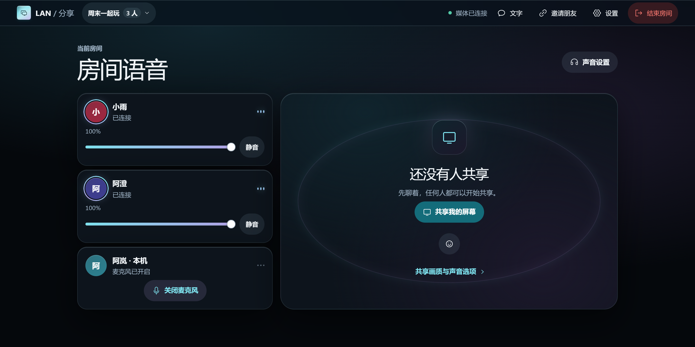
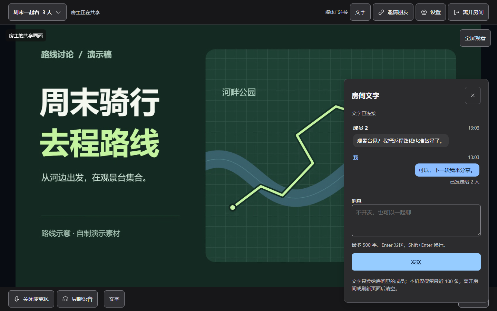

同屋看队友视角
朋友在玩，你们看他的屏幕，边看边说。下一局也可以换你分享。
0.5.0 公开测试版
一人分享整个显示器，最多两位朋友观看。边看边语音、发文字，停播后还可以轮流分享。
无需账号 画面、声音和文字在局域网内传输
运行要求 每位成员都要在 Windows x64 电脑上运行同一版本，使用桌面版 Edge 或 Chrome。电脑须处于可互通的私有 IPv4 局域网。
测试版 EXE 未数字签名，Windows 可能提示 SmartScreen。 校验与运行说明

约 30 秒看完操作。三个实际程序实例在同一台电脑运行，使用演示画面和合成声音。短片为静音，操作见字幕。
朋友在玩，你们看他的屏幕，边看边说。下一局也可以换你分享。
在同一间教室或办公室演示操作、一起过代码，随手发条文字补充。


每个人完整解压同一版本的 ZIP，打开「先看这里.html」，按说明运行「局域网屏幕共享.exe」。 遇到 Windows 提示？
一人创建房间。朋友从「附近的房间」加入，或让房主点「邀请朋友」复制完整邀请，再到「手动加入」粘贴。
点「共享我的屏幕」，在浏览器中选择整个显示器。想分享电脑声音时，一并允许系统音频。麦克风可在房间内单独开启。
两位朋友观看时，分享者的电脑只需编码一次视频和系统声音。同一份编码数据由本机程序分别发给两位观众。
编码一次，同一份画面送给两位观众。
默认画质目标，视频码率上限 8 Mbps。实际画质随硬件、浏览器和网络而变化。
0.5.0 发行版实测。同一台电脑使用合成画面和麦克风，分享端和两位观众均达到 1920×1080，实测编解码帧率约 60 FPS。
最终 CPU 对照中，旧版降到 720p。性能记录中的同画质 CPU 降幅来自另一轮内部构建的合成测试。真实游戏帧时间仍待实测。 查看测试条件及原始数据
当前版本的所有成员都需要在 Windows x64 电脑运行程序，并在桌面版 Edge 或 Chrome 中操作。电脑间须能通过私有 IPv4 局域网互相访问。软件不提供公网中继。
请房主确认已开启同网发现，并刷新房间列表。仍找不到时可粘贴完整邀请。访客网络隔离、VPN、多网卡和防火墙策略也可能影响连接。
需要。0.5.0 的画面共享与 0.4.x 不兼容。每位成员使用同一版本后，请重新创建房间。
停掉画面后可以继续语音，也可以换一人分享。短暂断线时，原房间和席位保留 30 秒并尝试恢复。刷新后可恢复收看，麦克风和屏幕需要重新开启。房主主动退出会结束房间。
0.5.0 公开测试版
Windows x64 · 完整 ZIP 包。每位成员都需运行同一版本。
测试版 EXE 未数字签名，Windows 可能提示 SmartScreen。请从本项目的 GitHub 发布页获取 ZIP，并核对发布附件中的校验值。
Get-FileHash -LiteralPath .\lan-screen-sharing-0.5.0-windows-x64.zip -Algorithm SHA256